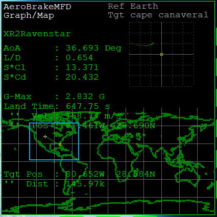

XR2とAeroBrake MFDでの着陸
XR2 Ravenstarと、AeroBrake MFDを使って着陸します。
AeroBrake MFDのインストール
下のリンクをクリック。
Downloadをクリックして、AeroBrake0.96.2.zipをクリック。
ダウンロードしたファイルを解凍して、中のファイル・フォルダをすべてコピー。
Orbiterのインストールフォルダにペーストして上書きする。
Orbiterを起動して、Modulesタブを開く。
AeroBrakeMFDにチェックを入れる。
周回軌道を離脱する
Ctrlを押しながらDを押す。
ドッキングポートを離れる。
RCSを使って少し距離を取る。
RCS LINにしてテンキーの9を押す。
APUを起動する。
Ctrl+Kを押してノーズコーンを閉じる。
ノーズコーンが閉じたら、APUを停止する。
以下のページを参照して、軌道離脱噴射を実行する。
COM/NAV MFDの設定が終わったら、このページに戻る。
再突入の準備
再突入の前に、ラジエータなどを収納しておく。
オートパイロットを実行し、再突入姿勢にする。
再突入チェック
高度が150kmになるのを待つ。
ProGradeオートパイロットを起動する。
機首を前方に向ける。
APUを起動する。
RADIATORをSTOWにする。
Alt+Rを押す。
再突入チェックをする。
キーボードの9を押す。
赤で表示されているものがあれば、隣のボタンをクリック。
ProGradeオートパイロットを解除する。
Hを押してSurface HUDにする。
RCS MODEをOFFに切り替える。
AF CTRLをONにする。
姿勢制御を開始する
ATTITUDE HOLDオートパイロットを起動する。
キーボードのLを押す。
機体が水平になるのを待つ。
AOA（迎え角）を40°にする。
テンキー2を何度か押す。
AeroBrake MFD
AeroBrake MFDを使って、地上基地へと降下する。
ターゲットを設定する
Surface MFDを開いておく。
反対側のMFDでSELをクリック。
AeroBrake MFDを開く。
TGTをクリック。
Cape Canaveralと入力する。
降下軌道に入る
黄色が目標地点を表す。
白が予想着陸地点を表す。
機首を上げ下げして、2つの直線を重ねる。
テンキー2or8を押す。
Altキーとの同時押しで、細かい調節ができる。

針路を修正する
マップ画面に切り替える。
PG→PRJの順でクリック。
世界地図と、右上の拡大画面に予想針路が表示される。
黄色い点が目的地を表す。
緑の線の先端が、黄色い点の近くを通るようにする。

テンキー4or6を何度か押す。
機体を大きく傾けて、針路を左右に変更する。
テンキー2or8を押す。
迎え角に応じて、緑の線の長さが変わる。
Altキーとの同時押しで、細かい調節ができる。
着陸
滑走路上空まで飛行し、オートパイロットで着陸する。
滑走路に接近する
基地の200km以内に接近したら、オートパイロットを解除する。
キーボードのLを押す。
高速飛行中に旋回すると、機体が壊れることがある。
速度が落ちるまで慎重に操縦すること。
AeroBrake MFD下のSELをクリック。
VOR/VTOLに切り替える。
以下のページを参照して、滑走路の手前まで飛行する。
ILSの信号を受信したら、このページに戻る。
Ctrl+Pを押して、一時停止を解除する。
滑走路上空に移動する
HOVERとRETRO DOORSをOPENにする。
Ctrl+\（バックスラッシュ）を押す。
Ctrl+Vを押す。
ランディングギアを出しておく。
キーボードでGを押す。
エアブレーキを展開する。
Ctrl+Bを押す。
宇宙船を操縦して、滑走路の真上に移動する。
メインエンジンを使って、秒速120m以上を維持する。
自動着陸
ホバーのオートパイロットを起動する。
キーボードでAを押す。
逆噴射エンジンを使って減速する。
テンキー-を押す。
RCS LINにする。
テンキー1or3、6or9を押して移動する。
AUTO-LAND機能を有効にする。
テンキー0を押す。
現在の位置で自動着陸する。